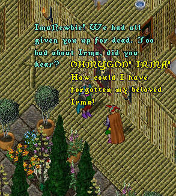
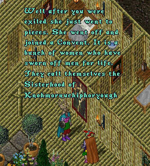
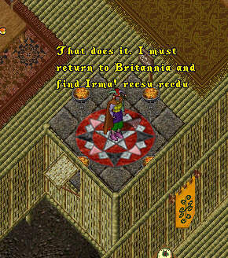
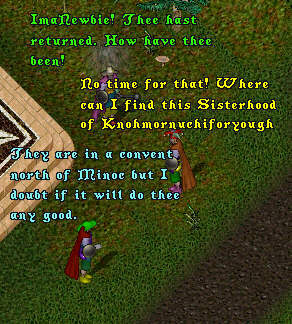
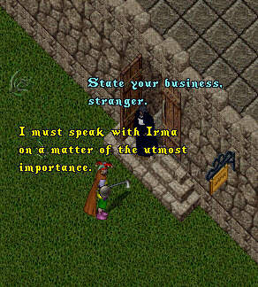
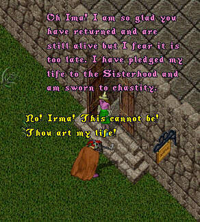
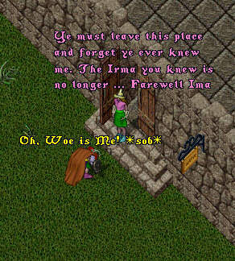
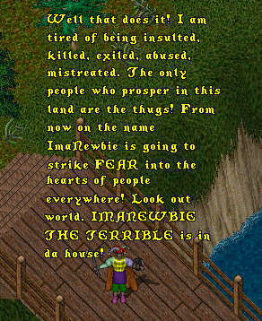

Episode 81: "Back to the Future" (Part 3) continues. A fateful meeting with ImaDufus in an inn in Papua causes ImaNewbie to remember the most precious memory of all ... Irma! If you haven't read Parts 1 & 2, head to episode #79 first.



Consumed with the desire to re-unite with his beloved
Irma, ImaNewbie heads for the nearest teleport and
back to the old lands of Britannia. As luck would have it
he runs into ImaNnoying and ImaMusicman who advise
him as to the whereabouts of the convent of the
Sisterhood of Knohmornuchiforyough!

ImaNewbie makes his way to the convent where he
confronts one of the sisters at the door.

The sister leaves and a few moments later, ImaNewbie's
heart is overcome with joy as he sees once again his
one-and-only true love, Irma!


Stricken with grief and disbelief ImaNewbie leaves the
convent and begins to wander aimlessly. It is not long though
that ImaNewbie's sorrow turns to outrage at all the
misfortune and abuse that has befallen him in Britannia.
